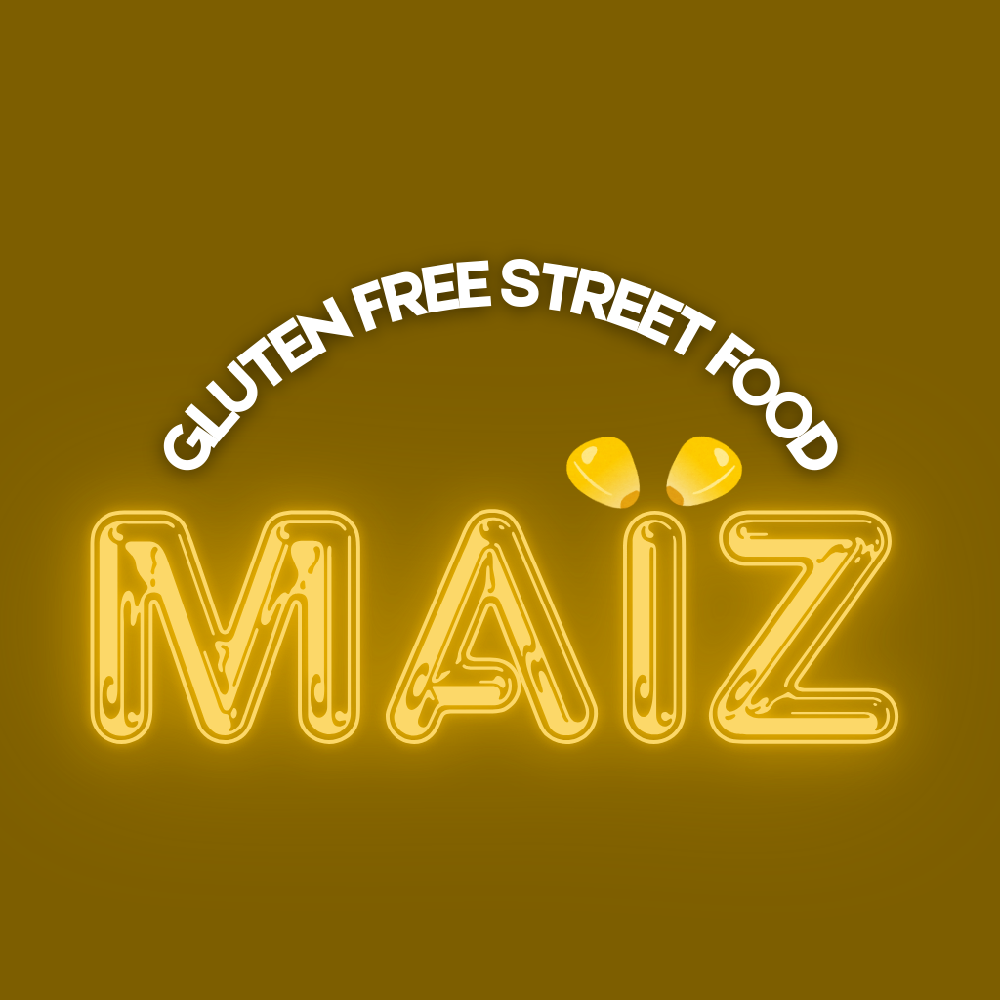

l'oro del senza glutine
MaÏZ è la sfida di uno studente di economia: creare un'hamburgeria che unisca la velocità e il gusto dei giganti del fast food alla sicurezza totale del senza glutine.
Il pane senza glutine sa di cartone? Non nel MaÏZ Lab. 🧪🌽 Ecco la formula definitiva per un panino super elastico e morbidissimo.
1. Gel Magico: Psillio in acqua (10 min).
2. Impasto: Unisci lievito sciolto e farina. NON aggiungere farina se appiccica!
3. Lievitazione: Fino al raddoppio in forno con luce accesa.
4. Cottura: 180°C (25 min) con vapore.
Pronti per il Bacon Monster? 🥓🍔
Parma, stiamo arrivando. 🚧